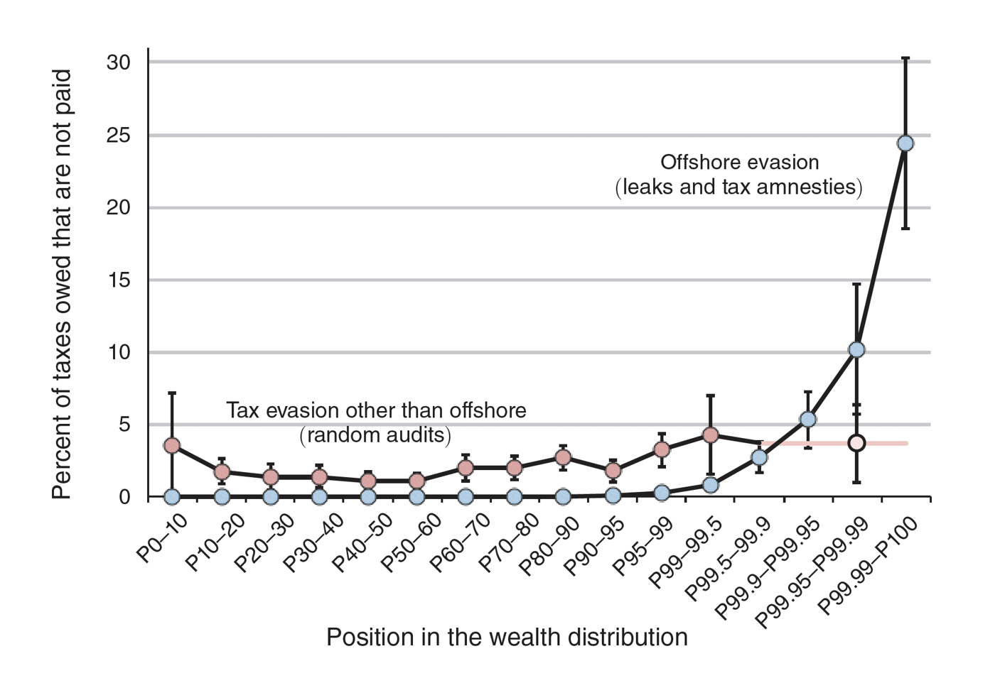
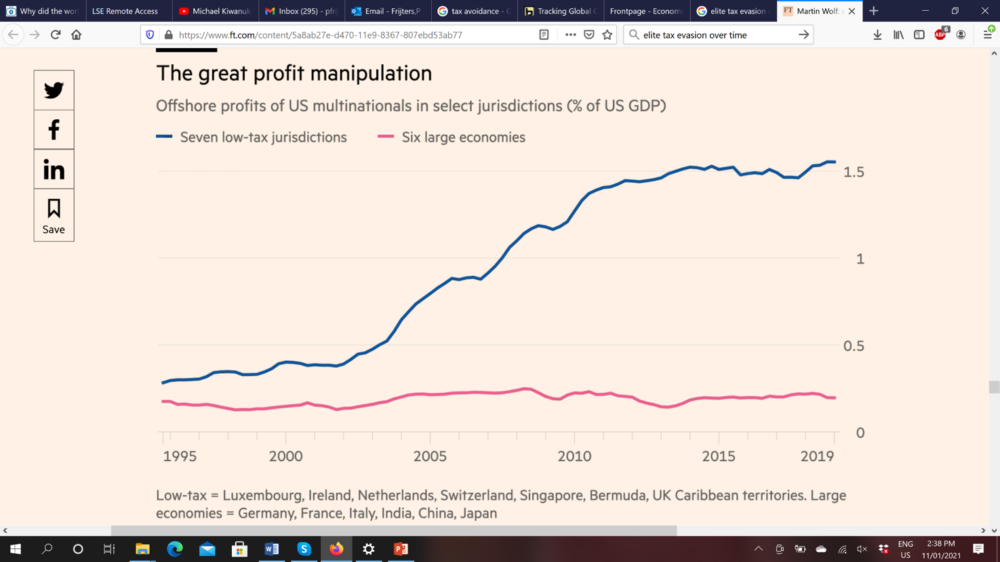
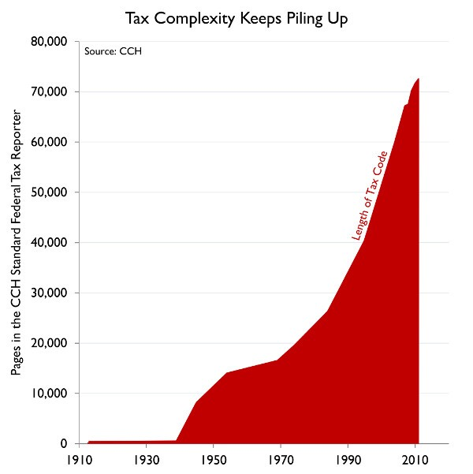

Together with Benno Torgler and Katharina Gangl, I published a piece recently on how to tax the powerful and sophisticated. Our substantive argument on what one should do becomes relatively simple once you understand what happened in the world of Western taxation the last 50 years. Consider the story of what happened in three graphs that essentially cover the question who, when, and how did the few escape taxation?
The first graph is from a 2019 AER paper by Alstadseater (et al.) and is mainly an analysis of the leaked 2016 Panama papers that uncovered the accounts of lots of Western tax-evaders who used a specialised firm in Panama. The graph adds that information to information on tax amnesties and what regular tax audits in Scandinavia find.

The way to read this graph is consider that for instance for the P40-P50 group, which is the 10% of the population just under the median level of wealth in Scandinavia, that random audits by tax officers find no more than 2% extra tax that was hidden, and no-one from that wealth group shows up in tax amnesties or in the Panama papers. They are hence very law abiding citizens. Audits find an extra 4% in the P99-P99.5 group (the poorest half of the top 1% in wealth). The Panama papers (plus tax amnesties) find that that group hides another 1% more than shows up in audits. Even up to the P99.95 group (everyone below the top 0.05%), implied tax evasion is less than 5%.The implied tax evasion really only takes off in the P99.99 group and above, so only the very richest person out of 10 thousand individuals. The estimate of the level of tax evasion at the top is 30% in this graph, but that of course still misses a lot of 'legal' evasion and other illegal methods not picked up in this paper, so the reality is much worse. Note for instance that the majority in the top 0.01% is still poor enough to have to organise tax evasion via intermediaries like firms in Panama and could thus get caught by leaks. Billionaires have their own people and their own laws, so they dont have to run the risk of discovery via some dodgy Panama office.
The answer to the question who evades taxes is thus that whilst the bottom 99.95% of the population pays nearly all their taxes, the very richest (the top 0.01%) does not and has escaped taxation. Note that these people will not be in most surveys or even official income statistics, so we are talking about a group that most researchers looking into tax evasion wont even have in their data.
The next graph is taken from a recent Financial Times articles and answers the question when the big increase in tax evasion happened. It shows over time how much of corporate profits got funneled away from the US tax authorities into just 7 tax havens (including the Netherlands I am ashamed to say). This is only a tiny part of corporate tax evasion (which is now estimated to easily be 50% of multinational corporate profits), so its not the numbers that matter but the timing of the changes.

This graph tells you that evasion among the big and powerful became a big thing around 2002 and stabilised around 2013, you might say the era of the explosion of the internet and thus the ability to hide in a very sophisticated manner.
The next graph tells you how this was essentially achieved by showing you over time the total number of pages you need to be aware of when paying taxes in the US. Note that 1986 was supposedly the year of the great tax simplification.

The key thing to know is that the number of pages of the actual tax legislation is pretty constant in the last 50 years at around 2,600 pages. Additional rulings of the IRS are another 6,400 pages or so. The big increase is the jurisprudence, ie ruling by courts on how elements of the tax code can be read and (ab)used. The increased complexity is thus not by government, but by rich individuals and companies trying to get away with tax evasion, leading to all kinds of schemes on which courts then have to decide (if the IRS even uncovers them). You see the tax rat-race begin in the 1970s and really explode in the 1990-2012 period and some stabilisation thereafter.
What this reflects is that companies and rich individuals understand the tax regulations much better than the tax officials. The advisers and lawyers of corporations and the top 0.01% often include the people who wrote the legislation. Also, the ability to simply avoid taxes by postponing them again and again via litigation has burgeoned.
So the rich have become more sophisticated than the tax authorities. They have the smarter experts and the deeper connections with politics, able to use the courts to hide and enable their activities. The US tax authorities have tried to keep up, but are spectacularly failing, which you can also see in the top graph that shows that tax audits do not find among the 0.01% what the leaked Panama documents did uncover.
The simple fact is that particularly the American super-rich have effectively beaten the tax-system and are no longer true citizens of the US in the sense that (if the pattern of the Scandinavians applies doubly to them) the laws 99.95% of Americans abide by do not apply to them. They are in between true rulers, who at least have the duty to look after their population, and the citizens: they are a new kind of nobility. Funnily enough, the nobility of centuries past was often untaxed in Europe, instead doing a lot of taxing themselves of their peasant subjects. That time has now returned and Americans thus now live economically in a neo-feudal era, which is not compatible with democracy or nationalism.
The situation in Australia is no different: Australia now has an economic wealth and tax burden structure more reminiscent of the European middle ages than of the 1970s. The reality that a new group of barons has arisen, and what one can do about it, is something to talk about in a follow-up post.
A few nit-picks:
1. Your source for "50% of corporate profits" claims 10% of US MNC corporate profits, which is, ahem, not the same thing
2. that FT graph does not show any avoidance of US taxes. It shows that US MNCs prefer to pay less foreign tax than more, but no more than that.
More substantively, I did not see any actual evidence of tax evasion/avoidance amongst the 0.01% (and I also skimmed your article). I understand the intiuitive argument that there must be, but I would hope that we could find some evidence of the scale of the problem before we propose dramatic solutions?
To take away the suspicion that you are a paid troll (which is very possible on this issue) it is important to use your actual name.
Substantively, I can see how the formulation could have lead to cross-wiring but I dont see a wrong claim in the earlier text since the link provided clarification as to what was meant. The corporate profit link headline states "40% of multinational profits are shifted to tax havens each year" which was in 2017 and thus not up to date (hence the 'could easily be' formulation allowing for the underestimation in that methodology and further developments the last 4 years). To avoid confusion I have now added the 'multinational' bit to be clearer.
The FT article was about tax evasion via profit manipulation so I dont see your issue there. It shows when one of the key mechanisms to do so increased in use (funneling profits to nominally be 'earned' in tax havens rather than in the US).
I didnt write the 2019 AER article that talks about the tax evasion of the 0.01% (unfortunately) but I encourage you to look it up and take up any you issue you have with the methods of its authors. If you had some specific beef with their methods I'd like to hear that, rather than a simple throw-away line. Its a top-cited article in a top journal and seen by me too as a great piece of work on a difficult topic.
Lol I wish I was paid to troll people, that would be fantastic frankly. I guarantee you that the world is missing out on a lot of top notch trolling because I happen get paid to do something quite different :(
Unfortunately, I am just a chronically sincere true believer, which is far worse :) For full disclosure, I sincerely believe that many countries should fund their tax administrations better and that their tax administrations should more intensively audit the very wealthy. Not to jump to the conclusion or anything but I also believe that is highly likely to be much more effective than any more radical solutions. Now back to the post:
Double-down on nitpicks
I think you have read a little too quickly both of your sources, since both the graph and the "missing profits" site only talk about overseas booked profits. So whilst it is possible that some of those profits could have been booked in the US, it is also certain that some of them would definitely not be booked in the US. The missing profits site, in particular, uses two numbers: 40% of overseas profits and 10% of US corporate tax revenue. There is no reasonable approximation from that to "50% of profits".
Alstadsæter paper
I have now found the Alstadsæter paper that you had not linked to. I agree that it is a serious paper, perhaps the most serious paper Zucman has co-authored (which I attribute solely to Alstadsæter's influence) and I could in fact talk about it almost all day. But for present purposes, I have two remarks:
1. they show, using a methodology biased towards detection of tax evasion, that the top 0.01% avoid 25% of their tax liability. This seems hard to reconcile with your repeated claims that this demographic essentially does not pay tax.
2. since the data this paper was based on, the offshore tax evasion "scene" has dramatically changed. The introduction of CRS and FATCA, and the looming introduction of MDR, have made it immensely more difficult to evade tax via offshore vehicles. So that 25% estimate is likely now much lower, and thus the scale of the problem is likely much smaller, and the need for radical solutions much less.
So we get back to my earlier points: I think that such a radical solution requires strong evidence of a substantial problem, whereas you have weak evidence of a not-so-large and rapidly shrinking problem.
I suggest that you put your energy into encouraging countries to fund their tax administrations better and that their tax administrations should more intensively audit the very wealthy.
yeah, without a name I am going to assume you really are a troll, though a sophisticated one. The missingprofits site does not talk about 10% of US corporate tax revenue but of global corporate tax. The background paper talks of high-value countries. And since the post is about what the top pays less (not the bottom 99.99% which includes a lot of corporations and their taxes) I dont see what you are complaining about. Your claim that evasion has reduced since 2017 is interesting, but show me the evidence.
To prove that I have some good faith, I would also say that the vast majority by amount of UNHW "avoidance" is simply the use of controlled charitable structures, which whilst they require you to spend the money on genuinely charitable purposes do not in any way diminish the power that comes with that money.
If you really wanted to increase the effective tax rate on billionaires then capping the charitable deduction at say 10k would do it nicely.
perhaps a good reason to adopt a flat tax as advocated by Freidman 9 or at least a linear tax) where there are no deductions
It's curious that countries don't take much action against tax haven countries (as the EU threatened the UK with if they tried that strategy -- so clearly they can do it). One interesting thing would be the extent to which important pollies are in their pockets, although I guess that may be very hard to find apart from registered political donations. A quantification of things like after retirement "director" positions, how much they pay and other less obvious favors would be fascinating.
Cato,
mind if I call you Cato, which seems a doubly apt name for you?
Your basic point that this short post doesnt prove the depth and breadth of tax evasion is totally true. Hence the title 'who and how'. The point of the post is to walk the reader through the question who is now tax-evading (and who is not), and what the basic mechanism is. Follow the references in the piece mentioned at the top if you want to get stuck into the full extent of the problem. Australian readers should read Michael West (or of course "game of mates") for extensive information on how the games of tax evasion are played.
I find your default belief interesting, ie the notion that there is not much to worry about but that a bit more funding to tax authorities would solve things. There is a naivite in that default belief that negates the possibility that you truly know this field: it would take major political will to oppose tax evasion since only political will can overcome the legal and financial barriers in the way of solutions (a tax authority cannot decide on international tax treaties or to enact totally new rules on multinationals!). Even your own example of religious charities begs political solutions, not just fiddling with the size of the tax audit office. Your default solution that is inconsistent with your own observations tells me you dont want to believe there is a problem with political and legal capture.
So, a Cato from something like the Cato Institute?
yes I think the revolving door ("game of mates") explains a lot of the political reticence to take this issue seriously, but I think it is also now about brutal power-politics: there is so much wealth among the rich tax-evaders that they can credibly threaten politicians with oblivion if they become a threat to their tax games. I was asked by a senior tax official in a seminar where I presented this stuff what it would take for politicians to stand up to these new barons. My honest answer was "fanaticism". Only fanatics could now oppose the new barons. So I fear that's where we are heading towards.
A lot has and is being done, especially around transparency but also a whole raft of accompanying measures, but this is mainly relevant to corporate tax.
Paul is probably right as to why nothing was done for so long! Remember that in France in recent memory even the Minister responsible for the tax department had to resign when it transpired that he had not declared a Swiss bank account.
perhaps a little knowledge of accounting is necessary. Companies use tax havens in OZ as well and reduce their tax accordingly. It would be useless under a flat or linear tax. Of course that would mean a similar system for income tax as well.
Flat tax wouldn't work against the super rich. Works fine against upper middle class businessmen who can currently make their income appear to belong to someone else or some other domestic entity. With flat tax said income attracts exactly the same amount of tax whoever it "belongs" to, which removes the incentive to do such shifting.
But offshoring means that there is typically no domestic record of the income at all, and if there is it is recorded as belonging to a foreign entity not subject to domestic tax.
Removing all deductions creates some severe horizontal equity and perverse incentive problems too messy to go into here, but I think capping them (though with a more sophisticated and complex cap than a flat figure) may have value. Again, though, I'm sceptical you'd catch the big boys that way.
Yes flat tax is a furphy.
I think one of the unintended consequences of Brexit is that Britain has left itself open to a lot more future pressure to clean up its act - the EU can play hardball now.
Everybody foresees a threat to the City from the EU withholding ordinary banking passports, but a much bigger threat IMO is that said City makes much of its money from private banks (ie banks with one client, said client owning them through a shell company) whose main function is channelling "loans" to their client through the Cayman Islands and like places (as Paul notes, these clients are too big to have to use dodgy Panamanians). The EU knows this.
It struck me that one way of tackling the Google and Facebook tax problem, and some others as well, would be to tax Australian companies on what they spend on advertising rather than giving them a deduction for it. I guess the reason why that is out of the question is that advertisers run the place.
perhaps but tax shifting is the accumulation of expenses in higher tax regimes to few expenses into tax havens where little tax is paid.
Kerry Packer for example took full example of this.
it changes all this.
It also makes companies look to the most efficient way of ding things,
Are you sure that private banking is a major source of revenue for the UK? Off the top of my head I would estimate that Switzerland is twice as big, and they have survived "outside" the EU for quite a while.
I would have thought that PB was pretty minor in the City overall.
it runs into the same problem: one needs an administrative definition of advertising and it needs one to observe the advertising, which is not trivial since much of Australian life is online, which is not really in Australia, so advertising oriented towards them is not easily observed. So with taxing advertising we are in the same complexity legal definition race that is talked about in the post and that has been well and truly gamed and lost by the tax authorities. No, we need something far more radical....
The meaning is clear enough when they make a deduction. Just use the same meaning and collect the money instead of giving it away.
and you do not think the companies that used to get a subsidy will start to report the same expenses as something different when they suddenly are taxed on them?
In your "just use" phrase you display the failed bureaucratic policies of the last 50 years. Nothing one thought one could 'just use' turned out to be usable when big money put its mind to it.
The Chinese authorities, which I know you rather admire, have on this score found a solution that does work though: they dragged Jack Ma and other billionnaires into the tax office and threatened him with oblivion if he didn't start coughing up big time. Their compliance was immediate, though not due to any laws but due to the threat to their persons. So it can be done by brute blackmail, but that too of course will have repercussions. Its the biggest financial policy news this year though we in the West dont hear much about it.
I was just being hypothetical. I think you are right that big money is the de facto government in the West, and right in implying that it writes its own tax laws. Government and monopoly become the same thing, and the life is strangled out of capitalism in the West. Capitalism is much healthier in China as long as dangerous monopolistic developments (e. g. Jack Ma) are unceremoniously crushed. China might still end up like the moribund West (Jack Ma and others might be allowed to create huge private financial monopolies that end up as de facto government), or the Chinese government might put the long-term survival of their administrative culture ahead of all other considerations, such as a priori individual rights.
I agree on your reading of the current trajectory whereby the rich are strangling the life out of capitalism in the West (though there is life in the corpse yet), and even that the Chinese CCP is preventing that from happening within China (and will keep preventing that), but I also think the Chinese system of governance has its own problems that are even worse. They strangle all ideological and political diversity out of their own system which leads them time and time again in their history to disaster. They have no mechanism to avoid it. Its tragic and nothing to do with the West.
Geneva used to be where you had your private bank 30 years ago. But Switzerland cleaned up its act quite a bit in the 90s and teens; Swiss bank accounts, even in your own bank, aint so immune to prying foreign eyes as they once were. The big reason was serious US and European pressure because of first IRA and Palestinian, then jihadi, terrorism when the money for these passed through Geneva. If they'd stuck to simple tax avoidance they'd still have the monopoly.
The City subsequently picked up all the growth in that business (ironic given Britain was one of the pressurers because of the IRA). No one knows exactly how many private banks there are there, but according to https://www.tatler.com/article/private-bank-uk business more than doubled between 2001 and 2017 (when Tatler estimated its value at "only" 226 billion pounds).
I don't see much ideological or political diversity amongst the squabbling backbiters accusing one another of heresy in the open fora of Parliaments or Congress. Confidentiality enables diversity of ideas to be expressed, candid advice to be sought, and informed decisions to be made in cabinet. The CCP can be regarded as a very large cabinet with a hierarchy of confidentiality. That works when its decisions are based on expertise in the health of the body of society. Eliminating poverty is like eliminating a terrible wasting disease in a population. It's an important start. Ensuring sustainability is next.
I can vouch for our troll.
He's a bona fide fellow whom I've even caught up with and had an enjoyable chat with (at a location which, given his apparent desire to be pseudonymous, I guess I ought not to disclose). Not sure why he's going incognito.
Thanks Nick. I just felt that it was better to go incognito :)
ok, not a troll then. Welcome!
There is not much exchange of ideas going on in parliament and congress, but mutual interest does get recognised, even in the US. There is bipartisanship, like on how to deal with China.
Of course cabinets are like juries: set up to be cooperative and to pool knowledge. That's why they work so well and all our countries have one. You might see cabinet is the place you capitalise on the diversity of knowledge and opinions generated elsewhere.
China can function incredibly well, as we saw in the 1990-2015 period when it really did perform economic and social miracles. The problem with its system is that the political top invariably slips into a large monoculture whereby it cannot abide by critique. As that system has done again in the last few years, not accidentally a few years after the system of power sharing gave way to one-clique rule (headed by one man): what we are seeing in Hong Kong and with the Uygurs is the consequence on the Chinese polity not being able to live with critique. It wasn't about democracy or outside interference: more unwanted noise was coming from those communities than the Chinese polity can stomach from within. When real internal critique becomes impossible, one can still muster technical expertise, but one loses perspective on what is sensible. That leads the system time and again to internal disaster. It is tragic, slow, and seemingly inevitable. Do you see how it can avoid this dynamic?
I haven't noticed any big mistakes. They got their economy moving after COVID much more skillfully than the West. Their emphasis on poverty reduction and quality development seems to me to be eminently sensible because they are keys to long-term stability. Perhaps I am guilty of wishful thinking, but it makes me feel good to think there is a big slice of the world that isn't necessarily fucked.
This just does not seem possible. Private banking has been recently identified as a growth area by most of the major banks but until this year half of them were thinking of selling the unit, and all of them were "pivoting to Asia" (HSBC and JPM, the two biggest ones with partially UK HQs (formally in Switzerland but decisions made principally in London) are both doing this most dramatically.
Without them almost none of the world's biggest private banks are based in London.
Also, Switzerland did not lose nearly as much AuM as you might have thought from AEOI, it would appear that a great number of very wealthy people value Swiss private banking even with taxes.
Finally, it was not terrorism financing that undid Swiss banking secrecy, it was facilitating the evasion of US, and to a lesser degree UK and French, taxes. Even if it turned out that the amounts of UK and French money in Switzerland that were undeclared were much smaller than estimated.
This was really a response to your comment calling me Cato, below. Oops.